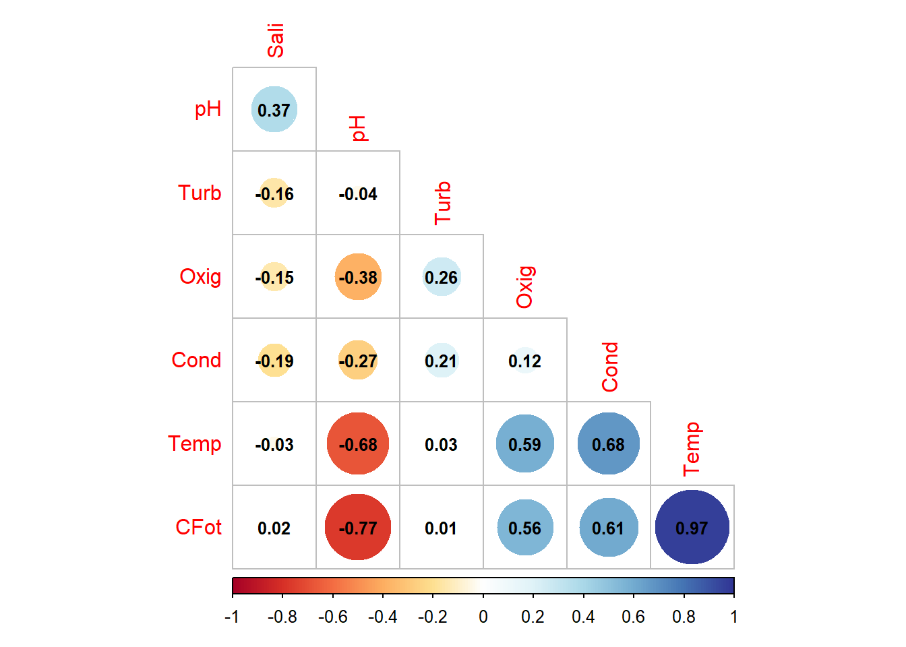
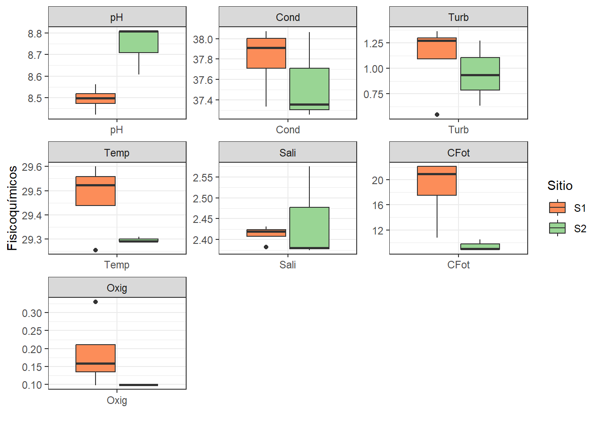
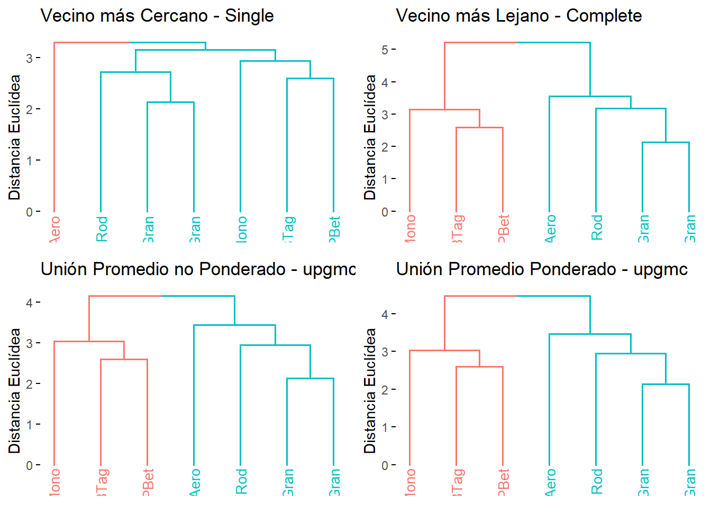
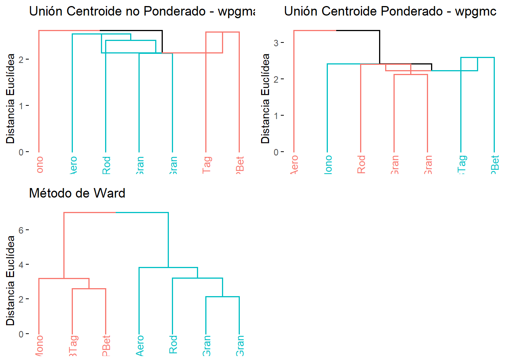
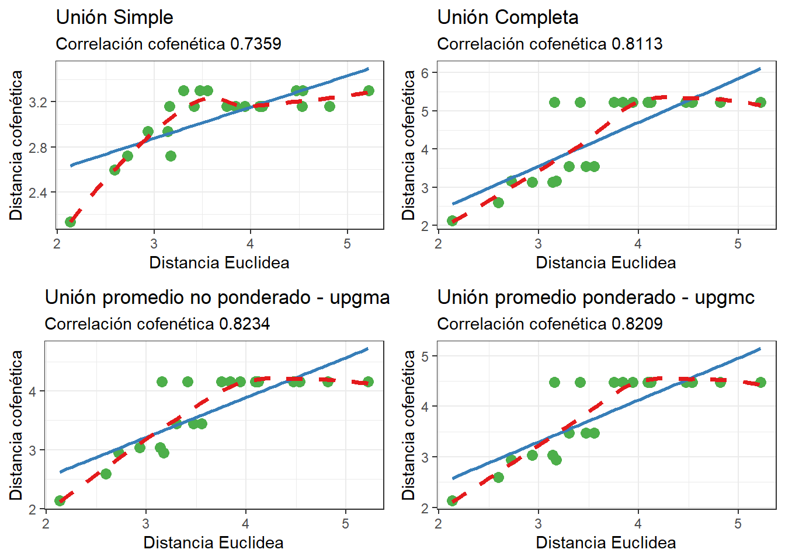
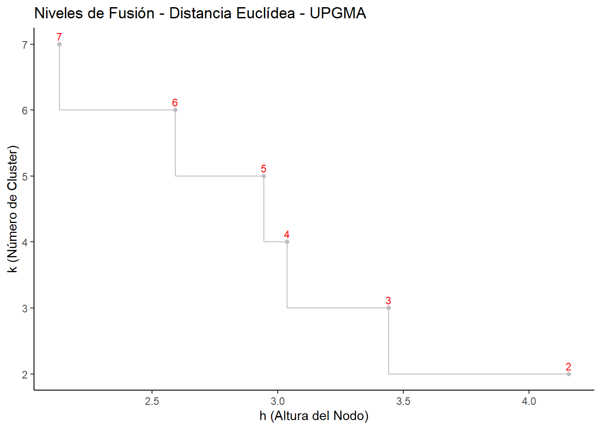
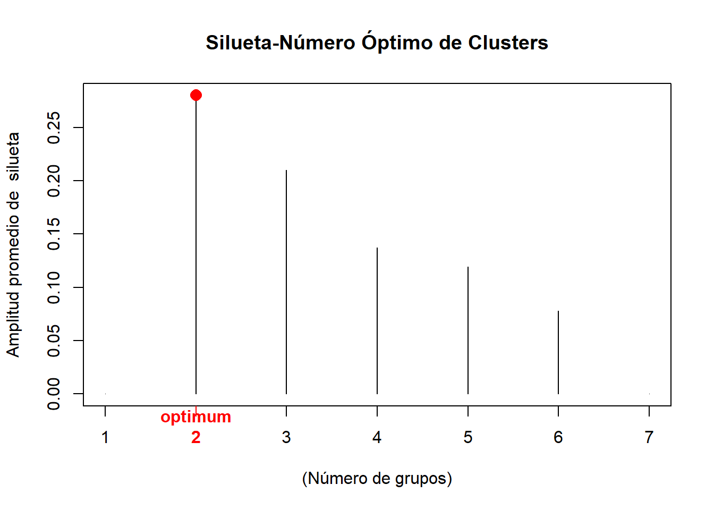
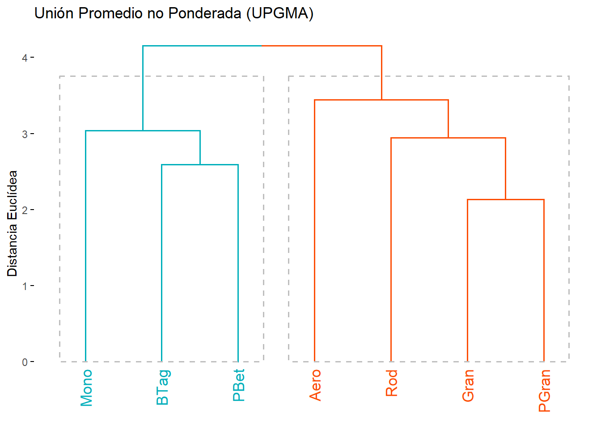
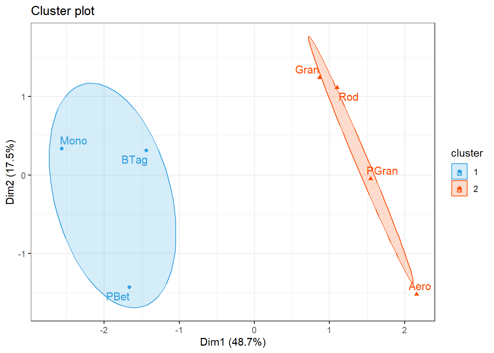

# Librerías requeridas
# install.packages(c("ellipse","gclus"))
library(ellipse)
require(gclus)
require(SciViews)
require(ade4)
require(vegan)
library(corrplot)
library(ggplot2)
library(pheatmap)
library("gplots")
library(gridExtra)
library(factoextra)
library(reshape)Taller 4.1 Análisis de Cluster - CLA
Librerías requeridas
Cargar la base de datos
# Base de datos
datos = read.csv2("FQmarino.csv",row.names=1)
colnames(datos) = c("Sitio","pH","Cond","Turb",
"Temp","Sali","CFot","Oxig")Exploración de los datos
# Elipses con colores
M <- cor(datos[,2:8]) # Matriz de Correlación (M)corrplot(M, method = "circle", # Correlaciones con circulos
type = "lower", insig="blank", # Forma del panel
order = "AOE", diag = FALSE, # Ordenar por nivel de correlación
addCoef.col ="black", # Color de los coeficientes
number.cex = 0.8, # Tamaño del texto
col = COL2("RdYlBu", 200)) # Transparencia de los circulos
La Figure 1 muestra que las variables ficoquímicas que mejor discriminan, clasifican o diferencian a los dos grupos de sitios son todas, excepto la salinidad. El sitio 1 es el que presenta los mayor valores de los parámetros fisicoquímicos, excepto el pH.
# Diferencias entre grupos por cada variable
ggplot(melt(datos[,c(1, 2:8)]), aes(x=variable, y=value)) +
geom_boxplot(aes(fill=Sitio)) +
scale_fill_manual(values = c('#fc8d59','#99d594')) +
labs(x="",y="Fisicoquímicos") +
facet_wrap(~ variable,scales="free") +
theme_bw()
Paso 1. Matriz de distancia entre observaciones
Se utiliza la distancia euclidea y el comando “scale” es necesario para estandarizar las variables fisicoquímicas debido a la disimilitud en sus escalas.
# Matriz de distancia
d.euclid <- dist(scale(datos[,c(2:8)]))
round(d.euclid,2) BTag PBet Mono Gran PGran Rod
PBet 2.59
Mono 2.94 3.14
Gran 3.16 4.09 3.84
PGran 3.94 3.75 4.82 2.13
Rod 3.41 4.12 4.53 2.72 3.17
Aero 4.47 4.54 5.22 3.47 3.30 3.55Paso 2. Elección del mejor método de agrupación
2.1 Siete métodos de agrupamiento
# Método 1. Vecino más cercano, método "single"
Cl.single <- hclust(d.euclid,method="single")# Método 2. Vecino más lejano función "complete"
Cl.complete<-hclust(d.euclid,method="complete")# Método 3. UPGMA función "average" Unión Promedio no Ponderado
Cl.upgma<-hclust(d.euclid,method="average")# Método 4. UPGMC función "mcquitty" Unión Promedio Ponderado
Cl.upgmc<-hclust(d.euclid,method="mcquitty")# Método 5. WPGMA función "centroid"
Cl.wpgma<-hclust(d.euclid,method="centroid")
# Método 6. WPGMC función "median"
Cl.wpgmc<-hclust(d.euclid,method="median")
# Método 7. WARD, función "ward"
Cl.ward<-hclust(d.euclid,method="ward.D")2.2 Graficar los 7 dendogramas
f1 <- fviz_dend(Cl.single, k = 2, # k grupos (opcionales)
cex = 0.7, # tamaño del texto de las ramas
ylab = "Distancia Euclídea", # Rotulo de la distancia
main = "Vecino más Cercano - Single") # Rotulo de títuloRegistered S3 method overwritten by 'dendextend':
method from
rev.hclust veganWarning: The `<scale>` argument of `guides()` cannot be `FALSE`. Use "none" instead as
of ggplot2 3.3.4.
ℹ The deprecated feature was likely used in the factoextra package.
Please report the issue at <https://github.com/kassambara/factoextra/issues>.f2 <- fviz_dend(Cl.complete, k = 2, # k grupos (opcionales)
cex = 0.7, # tamaño del texto de las ramas
ylab = "Distancia Euclídea", # Rotulo de la distancia
main = "Vecino más Lejano - Complete") # Rotulo de título
# Continuación del código anterior:
f3 <- fviz_dend(Cl.upgma, k = 2, # k grupos (opcionales)
cex = 0.7, # tamaño del texto de las ramas
ylab = "Distancia Euclídea", # Rotulo de la distancia
main = "Unión Promedio no Ponderado - upgmc") # Título
f4 <- fviz_dend(Cl.upgmc, k = 2,
cex = 0.7,
ylab = "Distancia Euclídea",
main = "Unión Promedio Ponderado - upgmc")
grid.arrange(f1,f2,f3,f4, ncol = 2)
f5 <- fviz_dend(Cl.wpgma, k = 2,
cex = 0.7,
ylab = "Distancia Euclídea",
main = "Unión Centroide no Ponderado - wpgma")
f6 <- fviz_dend(Cl.wpgmc, k = 2,
cex = 0.7,
ylab = "Distancia Euclídea",
main = "Unión Centroide Ponderado - wpgmc")
f7 <- fviz_dend(Cl.ward, k = 2,
cex = 0.7,
ylab = "Distancia Euclídea",
main = "Método de Ward")
grid.arrange(f5,f6,f7, ncol = 2)
2.3 Correlación Cofenética
# (1) Correlación cofenpetica para "single"
cofenet1 <- cophenetic(Cl.single)
simple = cor(d.euclid,cofenet1)
simple[1] 0.7358594# (2) Correlación cofenética para "complete"
cofenet2<-cophenetic(Cl.complete)
compl = cor(d.euclid,cofenet2)
compl[1] 0.8113013# (3) Correlación cofenética para "average"
cofenet3<-cophenetic(Cl.upgma)
upgma = cor(d.euclid,cofenet3)
upgma[1] 0.8233726# (4) CCorrelación cofenética para "mcquitty"
cofenet4<-cophenetic(Cl.upgmc)
upgmc = cor(d.euclid,cofenet4)
upgmc[1] 0.8209463# (5) Correlación cofenética para "centroid"
cofenet5<-cophenetic(Cl.wpgma)
wpgma = cor(d.euclid,cofenet5)
wpgma[1] 0.02444114# (6) Correlación cofenética para "median"
cofenet6<-cophenetic(Cl.wpgmc)
wpgmc = cor(d.euclid,cofenet6)
wpgmc[1] 0.3397504# (7) Correlación cofenética para "ward"
cofenet7<-cophenetic(Cl.ward)
ward = cor(d.euclid,cofenet7)
ward[1] 0.79712# data frame con cofenéticos
cofeneticos = data.frame(simple,compl,upgma,upgmc,
wpgma,wpgmc,ward)
# cofenéticos por cada métodos (Met)
cofenet=data.frame(Met = 1:7,Cofen=t(round(cofeneticos,3)))
# tabla con orden descendente de cofenéticos
cof_ordenado = cofenet[order(cofenet$Cofen, decreasing = TRUE), ]
# convertir matricesde distancia a vectores
d.euclid <- as.vector(d.euclid)
d.cofenet1 <- as.vector(cofenet1)
d.cofenet2 <- as.vector(cofenet2)
d.cofenet3 <- as.vector(cofenet3)
d.cofenet4 <- as.vector(cofenet4)
# crear un data frame con los vectores y agregar una columna de etiquetas
simple1 <- data.frame(d.euclid, d.cofenet1, d.cofenet2, d.cofenet3, d.cofenet4)
# Redondeo a tres decimales
simple1 = round(simple1, 3)
# Librería para editar la tabla
library(kableExtra)
# Edición de la tabla para su impresión
head(simple1) %>%
kbl(caption = "", booktabs = F,longtable = T) %>%
kable_classic(full_width = F, html_font = "Cambria")| d.euclid | d.cofenet1 | d.cofenet2 | d.cofenet3 | d.cofenet4 |
|---|---|---|---|---|
| 2.593 | 2.593 | 2.593 | 2.593 | 2.593 |
| 2.936 | 2.936 | 3.139 | 3.037 | 3.037 |
| 3.158 | 3.158 | 5.222 | 4.157 | 4.477 |
| 3.937 | 3.158 | 5.222 | 4.157 | 4.477 |
| 3.412 | 3.158 | 5.222 | 4.157 | 4.477 |
| 4.470 | 3.301 | 5.222 | 4.157 | 4.477 |
# Figuras correlaciones cofenéticas
# (1) distancia cofenética para "unión simple"
f1<-ggplot(simple1, aes(d.euclid,d.cofenet1))+
geom_point(size=3, color="#4daf4a") +
geom_smooth(method="lm",se=FALSE,color="#377eb8") +
geom_smooth(method="loess",se=FALSE,color ="#e41a1c",lty=2,size=1.3) +
labs(title= "Unión Simple",
subtitle= paste("Correlación cofenética",
round(cor(d.euclid,cofenet1),4)),
x="Distancia Euclidea",
y="Distancia cofenética") +
theme_bw()
# (2) distancia cofenética para "unión completa"
f2<-ggplot(simple1, aes(d.euclid,d.cofenet2))+
geom_point(size=3, color="#4daf4a") +
geom_smooth(method="lm",se=FALSE,color="#377eb8") +
geom_smooth(method="loess",se=FALSE,color ="#e41a1c",lty=2,size=1.3) +
labs(title= "Unión Completa",
subtitle= paste("Correlación cofenética",
round(cor(d.euclid,cofenet2),4)),
x="Distancia Euclidea",
y="Distancia cofenética") +
theme_bw()
# (3) distancia cofenética para "unión upgma"
f3<-ggplot(simple1, aes(d.euclid,d.cofenet3))+
geom_point(size=3, color="#4daf4a") +
geom_smooth(method="lm",se=FALSE,color="#377eb8") +
geom_smooth(method="loess",se=FALSE,color ="#e41a1c",lty=2,size=1.3) +
labs(title= "Unión promedio no ponderado - upgma",
subtitle= paste("Correlación cofenética",
round(cor(d.euclid,cofenet3),4)),
x="Distancia Euclidea",
y="Distancia cofenética") +
theme_bw()
# (4) distancia cofenética para "unión upgmc"
f4<-ggplot(simple1, aes(d.euclid,d.cofenet4))+
geom_point(size=3, color="#4daf4a") +
geom_smooth(method="lm",se=FALSE,color="#377eb8") +
geom_smooth(method="loess",se=FALSE,color ="#e41a1c",lty=2,size=1.3) +
labs(title= "Unión promedio ponderado - upgmc",
subtitle= paste("Correlación cofenética",
round(cor(d.euclid,cofenet4),4)),
x="Distancia Euclidea",
y="Distancia cofenética") +
theme_bw()
grid.arrange(f1,f2,f3,f4, ncol = 2)
PASO 3. Número de grupos formados
Opción 1. Niveles de Fusión
# Base de variables a relacionar (amb)
amb <- datos[,c(2:8)]# Data.frame con los datos de altura, k y número de cluster
f1 <- data.frame(h = Cl.upgma$height, k = nrow(amb):2,
cluster = nrow(amb):2)
# Crear el gráfico de dispersión y agregar etiquetas de texto
ggplot(f1, aes(x = h, y = k, label = cluster)) +
geom_point(color = "grey") +
geom_text(color = "red", size = 3, vjust = -0.5) +
geom_step(color = "grey", direction = "vh") +
# Personalizar el gráfico con títulos, etiquetas de ejes y
# paleta de colores
ggtitle("Niveles de Fusión - Distancia Euclídea - UPGMA") +
ylab("k (Número de Cluster)") +
xlab("h (Altura del Nodo)") +
scale_color_manual(values = c("grey", "red")) +
theme(axis.title = element_text(size = 16)) +
theme_classic()
Opción 2. Amplitud de silueta (3 insumos requeridos)
# 1) Base de datos (amb)
amb <- datos[,c(2:8)]
# 2) Paso 1. Distancia utilizada (d.euclid)
d.euclid <- dist(scale(datos[,c(2:8)]))
# 3) Paso 2. Método de agrupamiento seleccionado (cl.upgma)
Cl.upgma<-hclust(d.euclid,method="average")# 1. Crear un vector vacío (amb.vacio) con asw valores
amb.vacio <- numeric(nrow(amb))
# 2. Silueta "sil"
for(k in 2: (nrow(amb)-1)){
sil <- silhouette(cutree(Cl.upgma,k=k),d.euclid)
amb.vacio[k]<-summary(sil)$avg.width}
# 3. Mejor o mayor amplitud de silueta (2 particiones)
k.mejor <- which.max(amb.vacio)
k.mejor [1] 2# Grafica de silueta
plot(1:nrow(amb),amb.vacio,type="h",
main="Silueta-Número Óptimo de Clusters", xlab="(Número de grupos)",
ylab="Amplitud promedio de silueta")
axis(1,k.mejor,paste("optimum",k.mejor,sep="\n"),col="red",
font=2,col.axis="red")
points(k.mejor,max(amb.vacio),pch=16,col="red",cex=1.5)
Figura del dendograma jerárquico final
# Dendograma final
fviz_dend(Cl.upgma, k = 2, # k grupos
cex = 0.9, # tamaño del texto de las observaciones
ylab = "Distancia Euclídea", # Rotulo de la distancia
main = "Unión Promedio no Ponderada (UPGMA)", # Título
lower_rect = 0, # Inicio de los rectángulos en cero
k_colors = c("#00AFBB","#FC4E07"),
color_labels_by_k = TRUE, # Colores para cada grupo
rect = TRUE) # Rectángulos de cada grupo
Figura del dendograma no jerárquico final
# Paso 1. Matriz de distancia
d.euclid <- dist(scale(datos[,c(2:8)]))
# Paso 2. Método de Agrupamiento seleccionado: UPGMA
Cl.upgma<-hclust(d.euclid,method="average")
# Variable agrupadora con k=2 clúster
grp <- cutree(Cl.upgma, k = 2) # Grupos generados "grp"
grl <- levels(factor(grp)) # Rotulos de los grupos formados
# Incluir la variable agrupadora en la base de datos
datos.1=data.frame(grp,datos) # Nuevo dataframe con grupos (gr)
head (datos.1) # 6 primeras filas de la nueva base de datos grp Sitio pH Cond Turb Temp Sali CFot Oxig
BTag 1 S1 8.421 37.982 1.364 29.500 2.422 19.72 0.097
PBet 1 S1 8.490 38.073 0.545 29.545 2.431 22.10 0.147
Mono 1 S1 8.505 37.836 1.273 29.600 2.416 22.10 0.331
Gran 2 S1 8.562 37.336 1.273 29.255 2.382 10.80 0.170
PGran 2 S2 8.608 37.255 0.636 29.291 2.375 9.00 0.098
Rod 2 S2 8.808 38.063 1.273 29.310 2.380 8.80 0.098fviz_cluster(list(data = amb, cluster = grp),
palette = c("#2E9FDF", "#FC4E07"), # Colores para cada grupo
ellipse.type = "confidence", # Elipses
repel = TRUE, # Elimina solapamiento de observaciones
show.clust.cent = FALSE, # Muestra a los clúster centrados
ggtheme = theme_bw()) # Tipo de fondo tomado de ggplot2